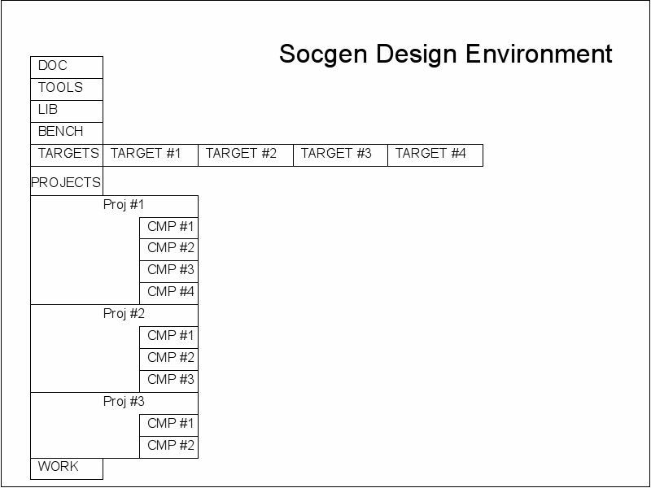
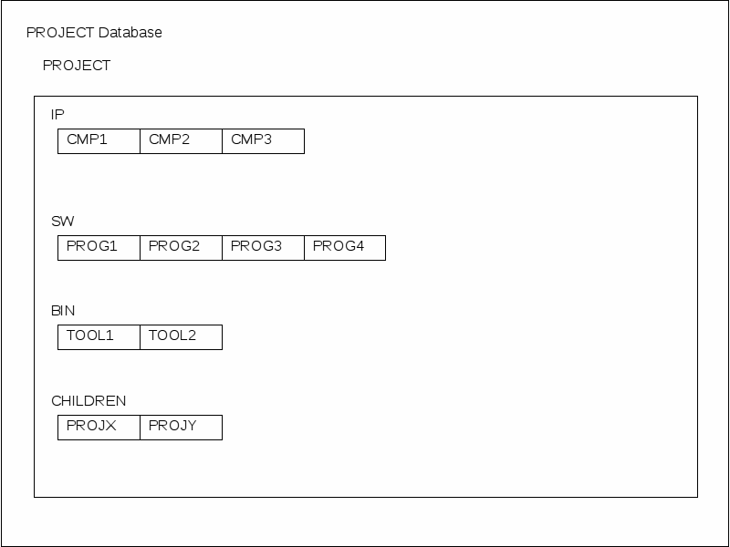
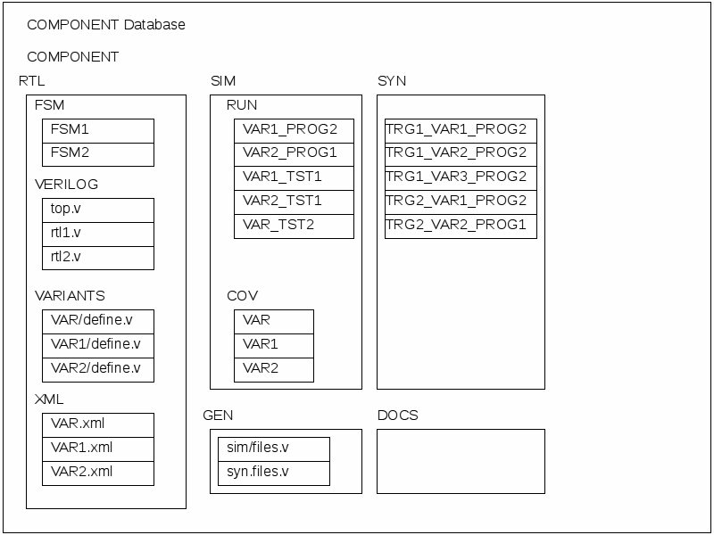

SOCGEN Project
The mission of the SOCGEN project is to provide a blueprint showing
digital designers how to create a System_on_chip (SOC) by
assembling components from a variety of sources. It will
show how to create a component that can be reused and provides a
free opensourced tool set that can be used to assemble and verify
a design. It employs modern design for reuse techniques to reduce the
waste and inefficiencies that is inherent in handcrafting a design.
Principles for Creating
Reusable Designs
Plan ahead
You may start a design with the intent that it is only going to be used
for one specific purpose only to find out later that other designers
want to use it. Create all designs with the intent that they will be
reused in ways that you haven't imagined and you won't have to scramble
later.
Maintain the design
Releasing a chip to production is not the end of the job. You must
still continue to maintain the design. You cannot archive a chip data
base into offline storage and simply put it on the shelf. Do you really
think that you can pull it down 20 years later and recreate the chip?
Bit Rot is real. Even if you can read the bits off the magtape that you
used to use then you will find that you can no longer get the same
version of the tools that you used to build the chip. The
original IC process will be long gone and the current ones have added
new requirements that your code doesn't meet.
When you finish a chip you archive an exact copy of all the data and
freeze that forever. Your design then continues to live on. When
you get a new version of a tool you rebuild and test everything
and fix problems. As new processes come online you retarget the design
to use them. As component ip is reved you upgrade and run the test
suite.
Then when your original product is winding down and someone wants a
follow up product then you have a head start.
Design for the lowest common denominator
Everybody loves to use some quirky little feature of the design target
to squeeze a little extra performance out of the system. But if you do
then you are locked into that target and cannot easily reuse the design
on a different target. Why do you think they put those features in the
first place? Instead you should survey the field and only use the
features that all target technologies can match
Design in a completely generic
technology
Design is a two step process. First the design is created and verified
in a completely generic behavioral RTL format and then converted into
the target technology. It is tempting to try to save time be designing
in the target technology but this will make it harder to reuse.
Automate
Everything
Handcrafting a design file is a time consuming and error prone
operation. Tasks that are preformed on every design should be done by a
tool. The designers job is to create the configuration files
needed by the tools and let automation do all the work.
Do not keep duplicate copies of a file in the database
Quotes and Thoughts
------------------
"Every piece of knowledge must have a single, unambiguous,
authoritative representation within a system." From The Pragmatic
Programmer
Not doing so makes it difficult to ensure that bug fixes and
enhancements
created by one user can be made available to all users. Every piece of
data
should have one and only one location in the database
Do not build the design inside of an RCS database.
It is really hard to keep track of all the new files that you have
added that you need to check into the Revision Control System if
they are buried by
gigabytes of generated files from the build process. Use symbolic links
to create a work area where generated files are kept outside the
database.Never check a generated file in an RCS repository. They should
only
contain the minimal seed data needed to rebuild the entire design. It
should never contain any files that were generated by the build
process.
Store files based on their source and not their use.
Are you creating a chip using IP from Joe's IP Emporium? Why not create
a spot inside your chip database for Joes files? Because that is not
planning ahead. Later if your lab starts another chip that also uses
Joes IP then they will also need access to those files. Create a spot
for files where everybody can simply access them by linking the desired
files into there database.
Do not mix unlike objects in the same file.
"Unlike" is a deliberately nebulous term. It can mean anything and
everything. If you have a instance of a hard macro that is
unsynthesizable then do not put it in a file along with synthesisable
rtl code. If you have code belonging to one designer then do not mix it
with code belonging to another. If you do then you have to worry about
file locking. Fragment the design so that each object is in it's own
file and then use a tool to put them back together.
Layer the design.
A full design will consist of several different databases that are
layered. Upper ones may override any content from a lower layer.
Requirements created by the Component Designers are only minimums, The
Architects and Si-Makers are free to override and tighten any
requirement from any lower level. Parameters should be used to
give the downstream designers the ability to tune the design for
the target process.
Design Directory

DOC
The documentation directory.
TOOLS
The tools directory contains all of the socgen tools needed to build
, simulate and synthesize all of the systems and components in the
database. Scripts and installation instructions are provided for any
other opensource tools that may be required. There are also
instructions for any proprietary tools that are used.
LIB
A library is a collection of building blocks that may not be
synthesizable in
all target technologies and may require customizations. The use of lib
parts in the rtl code will
facilitate porting a component into different technologies.
BENCH
A testbench is used for all simulations and test suites. Any system
or component may be simulated. Components can only do generic rtl sims
while systems may do either generic rtl ,specific rtl or gate sims.
Generic rtl models are included in the socgen library, specific ones
must be obtained from the IC vendor.
TARGETS
A target is a specific physical design that can implement a
component. Targets can be asic or fpga and include a Printed circuit
board(PCB) that may include other electronic components. The goal for
all components is to assign them to at least one target and prove that
the work in silicon
WORK
The work directory is a composite image of the projects directory
plus any additional links needed for simulation and synthesis. All
design processes are run in this directory and it contains all the
generated files that are produced.
PROJECTS
A project is a collection of components. A database must define at
least one project to create an area where components may be stored.
Other projects may be created as needed to group similar components
together and reducing clutter.
Project Directory

SW
The sw directory contains the source files and build scripts for any
bit images needed for the design
BIN
A project is a collection o.
CHILDREN
A project is a collection o.
IP
A project is a collection o.
Component Directory

RTL
A
RTL
A
RTL
A
RTL
A
RTL
A
RTL
A
SIM
A project is a collection o.
SYN
A project is a collection o.
DOC
A project is a collection o.